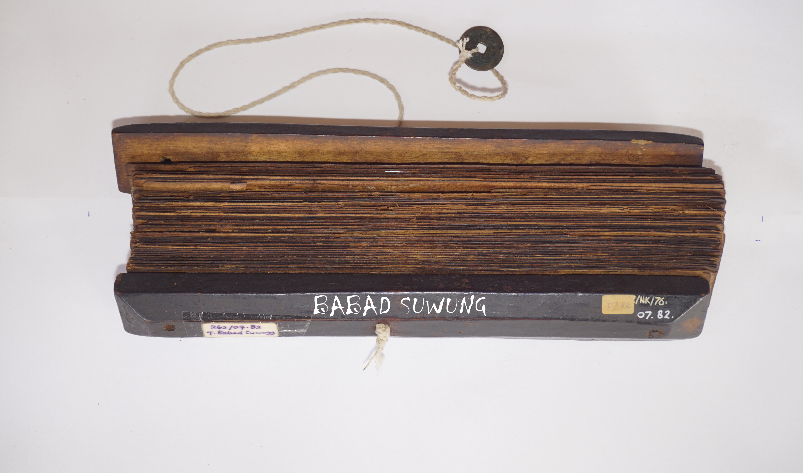
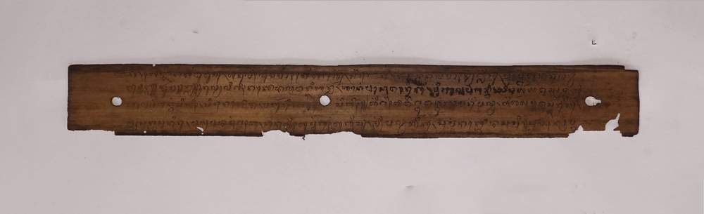

Ada sebuah kerajaan yang sangat besar kekuasaannya namanya kerajaan Suwung, rajanya bernama Batara Indra, istrinya bernama Dewi Sinta. Mempunyai anak sebanyak 44 orang, laki-laki 22 orang, perempuan 22 orang. Semua anaknya gagah dan cantik.
Batara Indra memerintahkan kepada semua anaknya, untuk mengawini saudaranya, masing-masing kembarannya kemudian, semua membuat rumah masing-masing.

Ejaan Latin:
72. ka, heñjang kang kawuwus, hanulih lumampah hénggal, sira ñaka, tana kwrena lampahnya glis, prapténg hana ring lanbwan// durma// nulya linggih nakoda lawan ki bandhar, hanéng pasowanéki, mring balé pagantang, sira harya wus prapta, hi balé pagantang sigih, sira nakoda, matur ring ñaka singgih. hinggih daweg tuwan menggah maring palwa, kiharya muwus saris, lah sakresa nira, payu pada munggaha, hanulih humanggahaglis, mring palwa hika, sareng nakoda sami// sampun prapta
Arti Indonesia:
72. besoknya kembali diceritakan, kemudian segera berangkat, Ki Nyaka, tidak diceritakan perjalanannya yang cepat, tibalah di pelabuhan. durma. kemudian Nakoda dan Ki Bandar duduk, di tempat pertemuan, di balai panggung, Ki Arya telah juga tiba, di balai panggung yang tinggi, Ki Nakoda, berbicara kepada Ki Nyaka yang terhormat, “ampun yang mulia silahkan naik ke perahu, Ki Arya kemudia menjawab, baiklah seperti yang engkau harapkan, jadinya naik bersama, kemudian segera naik, ke perahu itu, bersama dengan nakoda. Telah tiba
Arti Inggris:
72